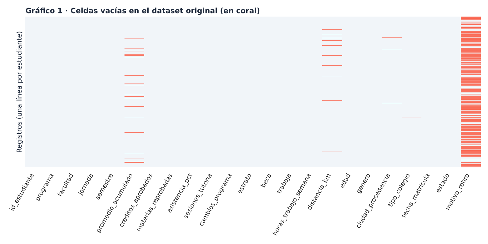
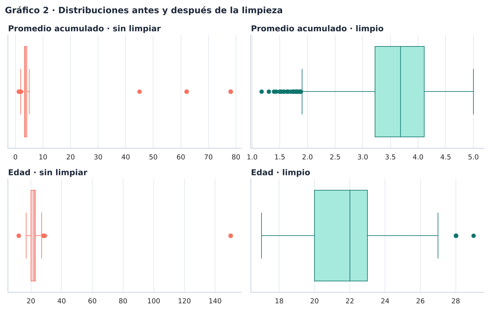
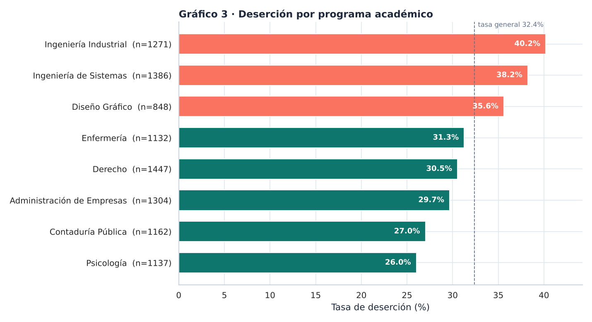
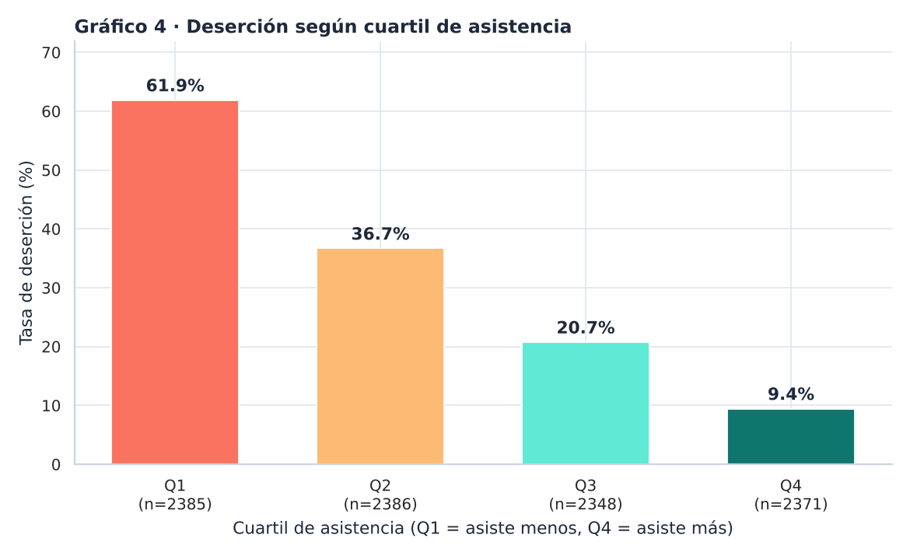

Todos los números de este documento salen de ejecutar python analisis_desercion.py. Los conteos del diagnóstico (sección 1) son del dataset original, antes de limpiar (10.150 filas). Los números de las preguntas (sección 3) son del dataset ya limpio (9.687 filas).
01Diccionario de datos
Los tipos son los que pide la guía: numérica (se puede sumar o promediar), categórica (valores de una lista), de texto o de fecha. Los roles son identificación, explicativa o resultado.
| Columna | Tipo | Descripción | Rol |
|---|---|---|---|
| id_estudiante | texto | Código único de cada estudiante (por ejemplo EST01214). Sirve para distinguir a un estudiante de otro. | identificación |
| programa | categórica | Carrera que estudia. Hay 8 programas, como Derecho o Psicología. | explicativa |
| facultad | categórica | Facultad a la que pertenece el programa (5 facultades). | explicativa |
| jornada | categórica | Horario en el que estudia: diurna, nocturna o fin de semana. | explicativa |
| semestre | numérica | Semestre que está cursando, del 1 al 10. | explicativa |
| promedio_acumulado | numérica | Promedio de todas sus notas hasta el momento, en escala de 0 a 5. | explicativa |
| creditos_aprobados | numérica | Cantidad de créditos (materias) que ya aprobó. | explicativa |
| materias_reprobadas | numérica | Cantidad de materias que ha perdido. | explicativa |
| asistencia_pct | numérica | Porcentaje de las clases a las que asistió, de 0 a 100. En el archivo original llega como texto porque algunas celdas tienen "%" o "-". | explicativa |
| sesiones_tutoria | numérica | Número de sesiones de tutoría o acompañamiento que ha recibido (de 0 a 7). | explicativa |
| cambios_programa | numérica | Número de veces que cambió de programa (en los datos solo hay 0 o 1). | explicativa |
| estrato | categórica | Estrato socioeconómico de su vivienda, del 1 al 6. Es un número, pero es una categoría: no tiene sentido sumarlo ni promediarlo. | explicativa |
| beca | categórica | Indica si el estudiante recibe una beca (sí o no). | explicativa |
| trabaja | categórica | Indica si el estudiante trabaja mientras estudia (sí o no). | explicativa |
| horas_trabajo_semana | numérica | Horas que trabaja por semana. En el archivo original llega como texto porque quienes no trabajan tienen un "-". | explicativa |
| distancia_km | numérica | Distancia en kilómetros entre su casa y la institución. Tiene códigos 999 que significan "sin dato". | explicativa |
| edad | numérica | Edad del estudiante en años. | explicativa |
| genero | categórica | Género del estudiante (femenino o masculino). Es una variable sensible. | explicativa |
| ciudad_procedencia | categórica | Ciudad de la que viene el estudiante (6 ciudades y "Otra ciudad"). Es una variable sensible. | explicativa |
| tipo_colegio | categórica | Tipo de colegio donde terminó el bachillerato: público o privado. | explicativa |
| fecha_matricula | fecha | Fecha en la que se matriculó. En el archivo original llega como texto, en dos formatos distintos. | explicativa |
| estado | categórica | Situación del estudiante: activo, graduado o desertor. | resultado |
| motivo_retiro | categórica | Razón por la que el estudiante abandonó (económico, académico, personal, cambio de institución, laboral o salud). Solo la tienen los desertores. | resultado |
Además, el script crea dos columnas nuevas que quedan en dataset_limpio.csv (25 columnas en total):
| Columna | Tipo | Descripción | Rol |
|---|---|---|---|
| desertor | categórica (True/False) | True si el estado del estudiante es "desertor". Su promedio es la tasa de deserción. | resultado |
| cuartil_asistencia | categórica | Grupo de asistencia del estudiante: Q1 (la más baja) a Q4 (la más alta). | explicativa |
Comparación con el enunciado: el archivo tiene 10.150 filas y 23 columnas, igual que en la descripción del taller. Las columnas con valores que no esperaba para su tipo son asistencia_pct y horas_trabajo_semana (texto en vez de número), distancia_km (códigos 999), fecha_matricula (dos formatos) y estrato (parece numérica pero es una categoría).
02Diagnóstico de calidad
En la primera mirada (paso 1) vi que el dataset tiene 10.150 filas y 23 columnas, como dice el enunciado. Dos columnas que deberían ser numéricas aparecen como texto: asistencia_pct y horas_trabajo_semana. Pasa porque tienen símbolos o guiones escritos en medio de los números.
Estos son los problemas que encontré en la auditoría (paso 2), sin corregir todavía:
| Tipo de problema | Columna | Cuántos | Cómo se detectó |
|---|---|---|---|
| Nulo real | promedio_acumulado | 304 | isnull().sum() |
| Nulo real | distancia_km | 199 | isnull().sum() |
| Nulo real | tipo_colegio | 152 | isnull().sum() |
| Nulo real | ciudad_procedencia | 103 | isnull().sum() |
| Nulo esperado (no es error) | motivo_retiro | 6.877 | Son los estudiantes que no desertaron (5.977 activos + 900 graduados) |
| Faltante disfrazado | asistencia_pct | 202 guiones "-" | comparar con == "-" |
| Faltante disfrazado | horas_trabajo_semana | 2.822 guiones "-" (todos de personas que no trabajan) | comparar con == "-" |
| Faltante disfrazado | distancia_km | 152 valores 999 | comparar con == 999 |
| Formato inconsistente | asistencia_pct | 300 celdas con el signo "%" | str.contains("%") |
| Formato inconsistente | fecha_matricula | 3.052 en DD/MM/AAAA y 7.098 en AAAA-MM-DD | str.contains("/") |
| Valor imposible | edad | 12 (4 de 12 años y 8 de 150 años) | condición fuera de 15 a 60 |
| Valor imposible | promedio_acumulado | 17 mayores a 5 (valores 45, 62 y 78) | condición > 5 |
| Valor imposible | horas_trabajo_semana | 30 con más de 100 horas por semana (hasta 200) | condición > 100 |
| Duplicado | todas las columnas | 150 filas (y 150 id_estudiante repetidos) | duplicated().sum() |
| Error tipográfico | programa | 260 celdas (Psicologia, Ingenieria de Sistemas) | value_counts() |
| Error tipográfico | jornada | 485 celdas (diurna, nocturna, NOCTURNA, con espacios) | value_counts() |
| Error tipográfico | genero | 559 celdas (M, F, femenino) | value_counts() |
| Error tipográfico | ciudad_procedencia | 542 celdas (BOGOTÁ, Bogota, bogota, medellin, Medellin) | value_counts() |
¿Cuál problema afecta más el análisis? Los faltantes disfrazados y los valores imposibles, porque isnull() no los detecta y se meten en los cálculos sin avisar. Por ejemplo, los 152 valores 999 suben el promedio de distancia de 17,2 km a 32,2 km, y los 17 promedios entre 45 y 78 suben el promedio académico de 3,65 a 3,76. Los nulos reales son más fáciles porque se ven con isnull().
Mapa de faltantes (gráfico 1). Los huecos más visibles están en motivo_retiro (una franja casi continua, 6.877 nulos, el 67,8 % de las filas) y, mucho más finos, en promedio_acumulado, distancia_km, tipo_colegio y ciudad_procedencia. Sí coinciden con los nulos que conté con isnull().sum(). Pero el mapa no muestra los guiones ni los 999, porque para pandas son datos y no nulos: por eso hay que auditar además del mapa.

03Decisiones de limpieza y su justificación
Cada decisión quedó registrada con registrar() en Data/processed/decisiones.csv. Esta es la tabla completa (el orden es el orden en que se ejecutó):
| Paso | Columna | Acción | Filas afectadas | Justificación |
|---|---|---|---|---|
| convertir_numericos | asistencia_pct | quitar el símbolo % | 300 | El % es solo un símbolo; el número ya está en escala de 0 a 100. Quitarlo permite calcular promedios y cuartiles. |
| convertir_numericos | asistencia_pct | cambiar el guion '-' por nulo | 202 | El guion significa que no hay dato. Es un faltante disfrazado: se vuelve nulo real para no inventar una asistencia. |
| convertir_numericos | asistencia_pct | convertir la columna a número | 10150 | La columna era texto; con pd.to_numeric(errors='coerce') queda numérica y ya se puede usar en estadísticas. |
| convertir_numericos | horas_trabajo_semana | cambiar el guion '-' por nulo y convertir a número | 2822 | Los guiones eran texto y volvían la columna de texto. Se pasan a nulo y se convierte a número. En el paso 8 se decide su valor final. |
| convertir_numericos | distancia_km | cambiar 999 por nulo | 152 | 999 km no es una distancia real; es un código de 'sin dato'. Si se deja, sube mucho el promedio de distancia. |
| unificar_categorias | programa | quitar espacios, pasar a minúsculas y unificar variantes | 260 | Eran el mismo valor escrito distinto (tildes, mayúsculas, espacios o abreviaturas). Si no se unifican, pandas los cuenta como grupos separados y las tasas por grupo salen mal. |
| unificar_categorias | jornada | quitar espacios, pasar a minúsculas y unificar variantes | 485 | Eran el mismo valor escrito distinto (tildes, mayúsculas, espacios o abreviaturas). Si no se unifican, pandas los cuenta como grupos separados y las tasas por grupo salen mal. |
| unificar_categorias | genero | quitar espacios, pasar a minúsculas y unificar variantes | 559 | Eran el mismo valor escrito distinto (tildes, mayúsculas, espacios o abreviaturas). Si no se unifican, pandas los cuenta como grupos separados y las tasas por grupo salen mal. |
| unificar_categorias | ciudad_procedencia | quitar espacios, pasar a minúsculas y unificar variantes | 542 | Eran el mismo valor escrito distinto (tildes, mayúsculas, espacios o abreviaturas). Si no se unifican, pandas los cuenta como grupos separados y las tasas por grupo salen mal. |
| convertir_fechas | fecha_matricula | convertir a fecha con los formatos AAAA-MM-DD y DD/MM/AAAA | 3052 | La columna tenía dos formatos mezclados. Se usó un formato explícito para cada uno, así no se confunde el día con el mes (03/04 puede ser 3 de abril o 4 de marzo). |
| eliminar_duplicados | todas | eliminar filas duplicadas (se conserva la primera) | 150 | Eran filas idénticas en todas las columnas, con el mismo id_estudiante: el mismo estudiante registrado dos veces. Dejarlas cuenta dos veces al mismo estudiante. |
| tratar_faltantes | promedio_acumulado | eliminar filas con promedio nulo | 298 | Una nota no se puede inventar. Imputar el promedio de todos haría que estos estudiantes parezcan iguales al resto y escondería diferencias reales. Se usó subset para no borrar filas por nulos de otras columnas. |
| tratar_faltantes | ciudad_procedencia | reemplazar nulos por 'Sin dato' | 96 | No se conoce la ciudad y no se debe inventar. Eliminar la fila perdería un estudiante completo por un dato secundario; 'Sin dato' los conserva y se ve claro. |
| tratar_faltantes | tipo_colegio | reemplazar nulos por 'Sin dato' | 145 | Mismo caso que la ciudad: no se sabe si el colegio era público o privado, así que no se asigna uno al azar y no se elimina al estudiante. |
| tratar_faltantes | motivo_retiro | dejar los nulos como están (no se modifica) | 0 | Son nulos esperados: 6562 estudiantes activos o graduados, a quienes no les aplica un motivo de retiro. Ningún desertor tiene el motivo vacío. |
| tratar_imposibles | edad | reemplazar edades fuera de 15 a 60 por la mediana (22.0) | 12 | Edades de 12 y de 150 años no son posibles en estudiantes de educación superior; son errores de registro. La mediana no se afecta por extremos, y son muy pocas filas. |
| tratar_imposibles | promedio_acumulado | convertir promedios fuera de 0 a 5 en nulo y eliminar esas filas | 15 | Valores como 45, 62 o 78 no existen en la escala de 0 a 5. No se sabe cuál era la nota real (dividir entre 10 daría 6.2, que tampoco sirve), así que no se inventa: se trata como un nulo de promedio y se elimina la fila. |
| tratar_imposibles | horas_trabajo_semana | poner 0 horas a quienes no trabajan y tenían guion | 2703 | Una persona que no trabaja tiene 0 horas de trabajo; el guion no era un dato perdido sino un 0. La regla depende de la columna trabaja, por eso no se usa un reemplazo general. |
| tratar_imposibles | horas_trabajo_semana | reemplazar horas mayores a 100 por la mediana de quienes trabajan (24.0) | 29 | Trabajar más de 100 horas a la semana, además de estudiar, no es realista (la semana tiene 168 horas). Se usa la mediana de quienes sí trabajan porque no se afecta por extremos. |
| crear_variables | desertor | crear columna True/False (estado == 'desertor') | 9687 | Con True/False el promedio de la columna es directamente la tasa de deserción de cada grupo. |
| crear_variables | cuartil_asistencia | crear 4 grupos de asistencia con pd.qcut (Q1 baja ... Q4 alta) | 9490 | Los cuartiles dan grupos de tamaño parecido, así las tasas son comparables. Los estudiantes sin asistencia (nulo) quedan sin cuartil. |
Resumen de lo que decidí y por qué:
- No inventar datos. Las notas nulas y las notas imposibles se eliminan (298 + 15 filas), porque no se puede saber cuál era la nota real. En
ciudad_procedenciaytipo_colegiose usó "Sin dato" (96 y 145 filas) para no perder estudiantes por un dato secundario. - Los 2.822 guiones de horas no eran datos perdidos. Todos eran de personas que no trabajan, así que su valor real es 0 horas. Por eso la regla usa la columna
trabaja. - Valores extremos de edad y horas se reemplazaron por la mediana (22 años y 24 horas), porque la mediana casi no cambia con valores extremos.
- "Otra ciudad" no se unificó con ninguna ciudad, porque no es un error de escritura sino una categoría que agrupa varias ciudades.
distancia_kmquedó con nulos (333 en el dataset limpio) porque no se usa en las cinco preguntas y reemplazarlos sería inventar un dato. Lo mismo con 197 estudiantes sin asistencia: no entran en los cuartiles.motivo_retirono se tocó. Sus nulos son esperados: ningún desertor tiene el motivo vacío.- Duplicados: no pueden ser dos estudiantes distintos, porque cada uno tiene un
id_estudianteúnico, y había exactamente 150 filas duplicadas y 150 ids repetidos.
Variables nuevas. Se creó desertor (True si el estado es "desertor"): hay 3.136 desertores de 9.687 estudiantes, es decir, una tasa de deserción general de 32,4 %. Se creó cuartil_asistencia con pd.qcut: quedaron cuatro grupos de tamaño parecido (alrededor de 2.370 estudiantes cada uno) y 197 estudiantes sin cuartil porque no tienen dato de asistencia. Se usan cuartiles y no los valores exactos de asistencia porque con valores exactos habría casi un grupo por cada número y cada grupo tendría muy pocos estudiantes, así que las tasas serían inestables; con cuartiles los grupos son del mismo tamaño y el patrón se ve fácil.
Resultado: de 10.150 filas se pasó a 9.687 (se eliminaron 150 duplicados, 298 sin promedio y 15 con promedio imposible).
Boxplots antes y después (gráfico 2). En promedio_acumulado el máximo pasó de 78 a 5, y la caja, que antes se veía aplastada por los valores 45, 62 y 78, ahora se ve completa (mediana 3,68). En edad el rango pasó de 12–150 a 17–29. Todavía quedan puntos sueltos: promedios bajos (entre 1,17 y 1,87) y edades de 28 y 29 años. Los dejé porque son valores posibles: son estudiantes con mal rendimiento o adultos que estudian, y eliminarlos quitaría justo a los estudiantes que más interesan para entender la deserción.

04Respuestas a las cinco preguntas
Pregunta 1: ¿Qué programa presenta la tasa de deserción más alta?
| Programa | Tasa de deserción | Estudiantes |
|---|---|---|
| Ingeniería Industrial | 40,2 % | 1.271 |
| Ingeniería de Sistemas | 38,2 % | 1.386 |
| Diseño Gráfico | 35,6 % | 848 |
| Enfermería | 31,3 % | 1.132 |
| Derecho | 30,5 % | 1.447 |
| Administración de Empresas | 29,7 % | 1.304 |
| Contaduría Pública | 27,0 % | 1.162 |
| Psicología | 26,0 % | 1.137 |
Respuesta: Ingeniería Industrial, con 40,2 % (1.271 estudiantes). Casi 4 de cada 10 abandonan. La diferencia con Ingeniería de Sistemas (38,2 %) es de solo 2 puntos, así que no se puede asegurar que Industrial sea realmente peor que Sistemas; lo que sí se ve es que las dos ingenierías están claramente por encima de Psicología (26,0 %). El programa más pequeño es Diseño Gráfico con 848 estudiantes: es el que hay que mirar con más cuidado, pero igual es un grupo grande y su tasa es confiable. (Gráfico 3.)

Pregunta 2: ¿Hay diferencia en la deserción entre becados y no becados?
| Beca | Tasa de deserción | Estudiantes |
|---|---|---|
| No | 36,4 % | 7.004 |
| Sí | 21,9 % | 2.683 |
Respuesta: sí. Los becados desertan 14,5 puntos porcentuales menos (21,9 % frente a 36,4 %). Pero esto no prueba que la beca cause la permanencia. Lo que muestran los datos es que "becado" y "desertar poco" aparecen juntos, pero no se sabe por qué. Puede que la beca se le dé a estudiantes que ya tenían más probabilidades de quedarse (por ejemplo, por su buen rendimiento), y entonces la diferencia vendría de esos estudiantes y no de la beca. Para saber si la beca realmente causa la permanencia haría falta comparar grupos que sean iguales en todo y solo cambien en la beca. Esto se explica con más detalle en la reflexión 1.
Pregunta 3: ¿Qué jornada tiene el menor promedio acumulado?
| Jornada | Promedio acumulado | Estudiantes |
|---|---|---|
| Nocturna | 3,464 | 2.666 |
| Fin de semana | 3,704 | 949 |
| Diurna | 3,725 | 6.072 |
Respuesta: la nocturna, con 3,464 (2.666 estudiantes). Está unos 0,26 puntos por debajo de las otras dos, que casi son iguales entre sí (diferencia de 0,02). Los tres grupos son grandes, así que el resultado es confiable.
Pregunta 4: ¿Cuántas materias reprobadas tienen en promedio los desertores frente a los activos? (sin graduados)
| Estado | Materias reprobadas (promedio) | Estudiantes |
|---|---|---|
| Desertor | 3,066 | 3.136 |
| Activo | 0,623 | 5.692 |
Respuesta: los desertores han reprobado en promedio 3,07 materias y los activos 0,62; los desertores reprueban unas 4,9 veces más. Por qué se excluyen los graduados (859 estudiantes): ya terminaron la carrera, así que no son ni desertores ni activos. La pregunta compara a los que se fueron con los que siguen estudiando, y si se mezclan los graduados el promedio del grupo "no desertor" ya no representaría a los que siguen en la institución.
Pregunta 5: ¿La deserción aumenta conforme baja la asistencia?
| Cuartil de asistencia | Asistencia promedio | Tasa de deserción | Estudiantes |
|---|---|---|---|
| Q1 (más baja) | 73,9 % | 61,9 % | 2.385 |
| Q2 | 84,4 % | 36,7 % | 2.386 |
| Q3 | 91,3 % | 20,7 % | 2.348 |
| Q4 (más alta) | 98,7 % | 9,4 % | 2.371 |
Respuesta: sí. Cada vez que la asistencia sube de grupo, la deserción baja: de 61,9 % en el cuartil de menor asistencia a 9,4 % en el de mayor asistencia (unas 6,6 veces menos). Los cuatro grupos tienen un tamaño parecido (alrededor de 2.370 estudiantes), y quedaron por fuera 197 estudiantes sin dato de asistencia. Esto es una asociación y no una prueba de causa: no se sabe si faltar a clase hace que el estudiante abandone, o si un estudiante que ya piensa en irse (por problemas de plata, de trabajo o personales) deja de asistir primero. (Gráfico 4.)

05Reflexión: asociación y causalidad
Si la deserción es menor entre los becados (21,9 % frente a 36,4 %), no se puede decir que la beca cause la permanencia. Una asociación solo dice que dos cosas aparecen juntas. Hay otras razones por las que alguien puede recibir beca y también quedarse:
- Las becas suelen darse por buen rendimiento o por esfuerzo. Un estudiante así ya tendría más probabilidad de terminar aunque no tuviera la beca. En los datos, los becados tienen un promedio algo mayor (3,70 frente a 3,63), aunque la diferencia es pequeña.
- Puede haber otros factores que no están en los datos: motivación, apoyo de la familia, tiempo disponible, etc., que influyen tanto en conseguir la beca como en no abandonar.
- Los datos solo muestran un momento. No se sabe si la beca llegó antes o después de que el estudiante decidiera quedarse.
Para distinguir una causa de una asociación habría que hacer un experimento: dar becas a un grupo escogido al azar y comparar con otro grupo parecido sin beca. Así, la única diferencia entre los dos grupos sería la beca.
06Reflexión: motivo_retiro y la predicción
No puede usarse para predecir la deserción antes de que ocurra. motivo_retiro solo se conoce cuando el estudiante ya desertó: en los datos, el 100 % de los desertores la tienen llena y el 0 % de los activos y graduados. Si se usara, el modelo "adivinaría" perfecto, pero solo porque la columna ya contiene la respuesta (se llama fuga de información). Cuando se necesita predecir, el estudiante aún no se ha ido y esa columna está vacía.
Otras columnas con un problema parecido:
estado: es la misma variable que se quiere predecir (y de ella saledesertor).semestre,creditos_aprobados,materias_reprobadas,promedio_acumuladoyasistencia_pct: son datos que se miden hasta el momento en que el estudiante se retira. Por ejemplo, los desertores tienen en promedio 18,97 créditos aprobados y los graduados 39,26. Se pueden usar con cuidado, pero hay que tomar el valor de un momento anterior a la deserción (por ejemplo, del primer mes de clases) y no el valor final.
07Reflexión: variables sensibles
Género, estrato y ciudad de procedencia pueden reflejar desigualdades sociales. Considero que la institución no debería usarlas para decidir qué estudiantes reciben apoyo, por estos riesgos:
- Discriminar sin querer. Si el estrato 6 o una ciudad tienen mayor deserción, usar esa variable llevaría a tratar distinto a una persona por algo que no eligió y que no explica por qué se va. Una persona no es "de riesgo" por su ciudad.
- Las diferencias en los datos son pequeñas. La deserción es 31,7 % en mujeres y 33,2 % en hombres; por estrato va de 30,4 % a 37,1 %; por ciudad, de 28,3 % (Rionegro) a 34,7 % (Bogotá). Son diferencias mucho menores que las de la asistencia (9,4 % frente a 61,9 %) o las de trabajar (39,5 % si trabaja y 26,7 % si no). Hay variables que dicen mucho más sobre el riesgo y que sí se pueden intervenir.
- Reforzar la desigualdad. Los grupos con menos apoyo hoy podrían recibir aún menos, o quedar marcados con una etiqueta que ya no se quita.
- Son datos personales. Estas variables se pueden usar mal o filtrar, y los grupos pequeños (por ejemplo, "Sin dato" con 96 estudiantes) dan conclusiones poco confiables.
Es mejor basar el apoyo en variables sobre las que la institución sí puede actuar (asistencia, materias reprobadas, horas de trabajo, tutorías) y usar las sensibles solo para revisar que el apoyo esté llegando de forma justa a todos los grupos.